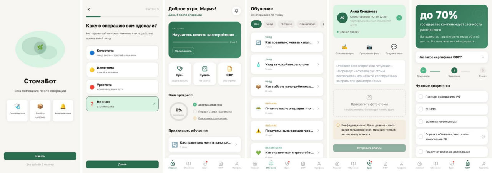
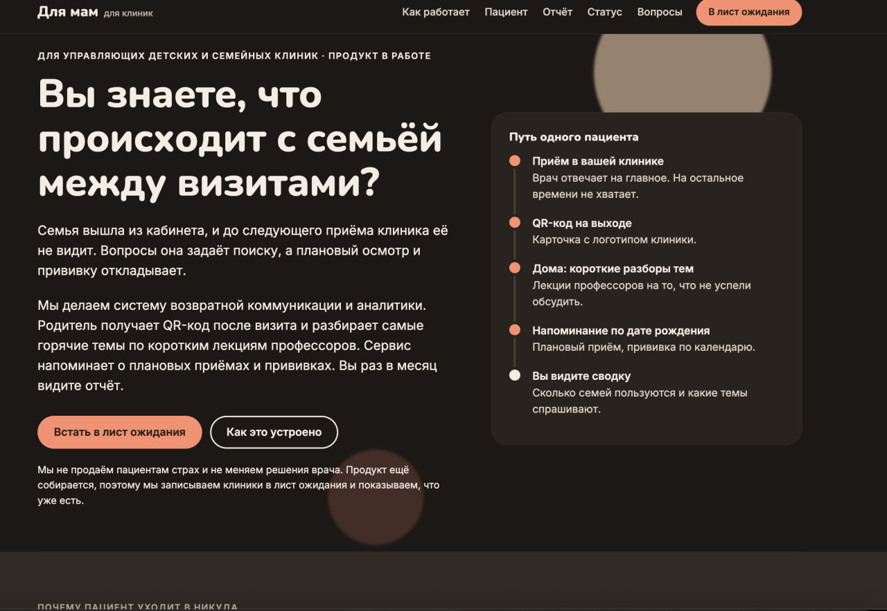
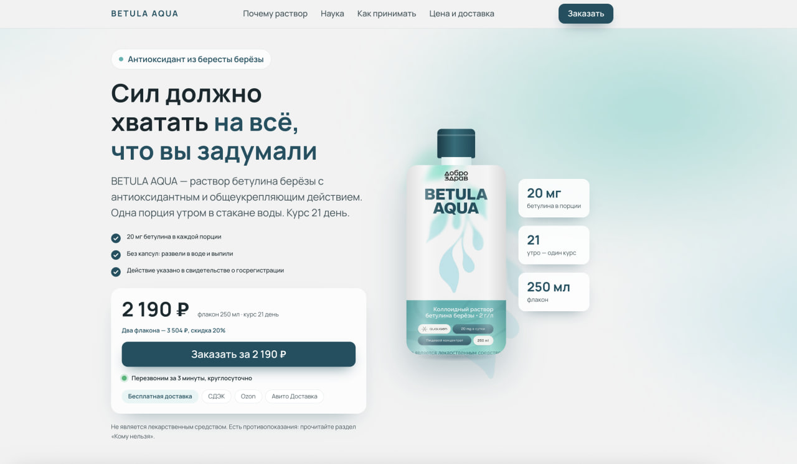
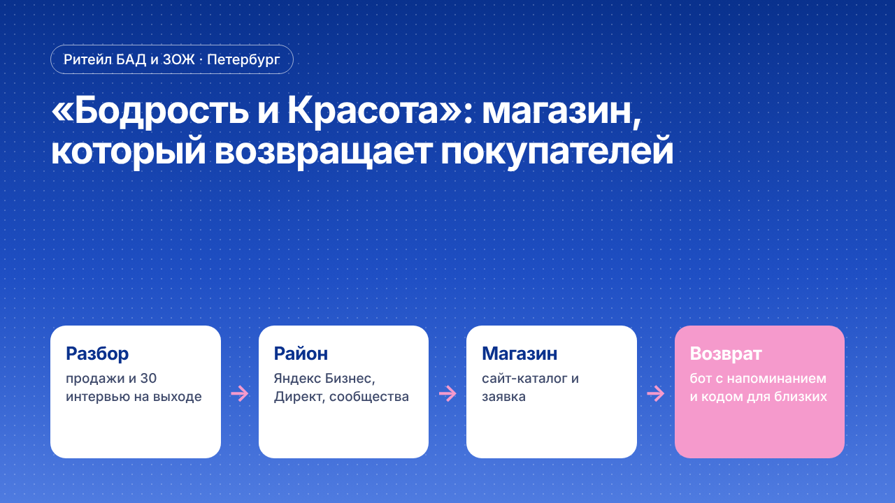
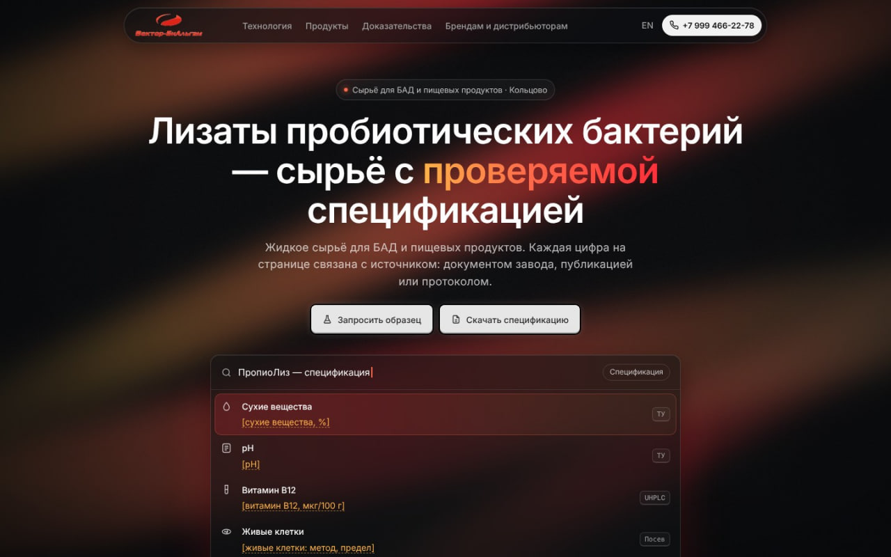

Кейсы: маркетинг, который не заканчивается на визите
Каждый кейс — по схеме STAR: ситуация, задача, действия, результат. Плюс метод, чтобы было видно ход мысли. В кейсах только то, что можно проверить.
Бот для пациентов со стомой

Пациента выписывают после операции, и он остаётся один. Сделали сервис для пациента, медсестры и менеджера и согласовали его с головным офисом в Германии.
- 3аудитории в одном сервисефакт проекта
- QRпри выписке из больницыфакт проекта
- 1согласование с головным офисомфакт проекта
Читать кейс: Бот для пациентов со стомой
Проект для мам

Выгрузили форум за 20 лет, сверили с поиском 2026 года и собрали банк вопросов, на которые отвечают профессора. Для клиник — QR после визита и сводка.
- 3 281тема форума в анализефакт проекта
- 526вопросов для врачейфакт проекта
- 67карточек болейфакт проекта
Читать кейс: Проект для мам
Бетулин: завод учёных

Продукт находили по сарафану, продаж как системы не было. 30 интервью, сайт, два бота, этикетка — и B2B-покупатели сырья.
- 30интервью с покупателямифакт проекта
- 2бота: MAX и Telegramфакт проекта
- с октябряB2B-отгрузки сырьяфакт проекта
Читать кейс: Бетулин: завод учёных
«Бодрость и Красота», Петербург

Районный магазин жил на случайных прохожих. Разобрали продажи, поговорили с покупателями, вывели на карты и построили возврат через бот.
- 30интервью на выходе из магазинафакт проекта
- 4канала привлечения и возвратафакт проекта
- 1сайт-каталог с ботомфакт проекта
Читать кейс: Бодрость и Красота
Лизаты «Вектор-БиАльгам»

Сильная разработка без продаж. Собрали доказательную базу, нашли покупателей в семи странах и вышли на тех, кто принимает решение.
- 60+компаний в реестрефакт проекта
- 7странфакт проекта
- 21карточка ЛПРфакт проекта
Читать кейс: лизаты Вектор-БиАльгам
Как читать цифры
- Только факты проекта.Объём выполненной работы, который можно проверить: интервью, компании, документы.
- Эффект — когда он есть.Цифры результата публикуем, когда они есть у клиента и он разрешает их назвать. Среднерыночных ориентиров не ставим.
- Клиенты — по имени.Называем только с их разрешения.
Записаться на диагностику
Расскажите, что нужно сделать. Уточним объём и предложим состав работ.